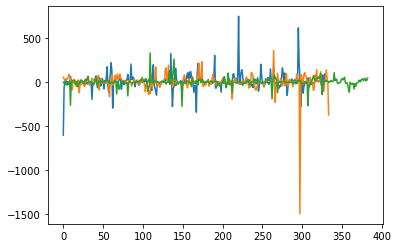
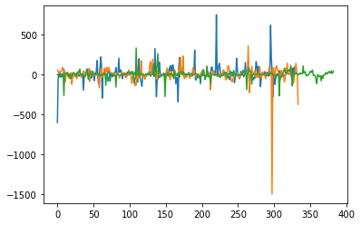

Week 8: Gait Analysis???#
Laboratory 7
Last updated July 07, 2022
00. Content #
Mathematics
3 dimensional vectors
Integration
Differentiation
Programming Skills
Modules
Embedded Systems
Thonny and MicroPython
0. Required Content #
Microcontroller: Raspberry Pi Pico
Breadboard
USB connector
LSM9DS0 accelerometer
OLED display
TL1105 tactile switch
9-volt battery
7805 voltage regulator
Write your name and email below:
Name: me
Email: me @purdue.edu
Gait Analysis#
Some common gait metrics used in a medical setting are step length, stride length, cadence, cycle time and joint angles. Some of these things we won’t be able to measure with only an accelerometer but others are quite accessible like cadence, which is the number of steps per minute. In this lab, we will be analyzing the curvature and torsion of the path of the pedometer.
Curvature#
Curvature describes how sharply a smooth curve turns. For example, a straight line has zero curvature and a circle has constant curvature. If a smooth curve is parameterized by \(\mathbf{r}(t) = \langle x(t),y(t),z(t) \rangle\), then the curvature \(\kappa\) of \(\mathbf{r}(t)\) at time \(t\) is given by
Before we calculate \(\kappa\), it is important to note that if \(\mathbf{r}(t)\) describes the path of the pedometer, then the acceleration values \(\langle a_x(t),a_y(t),a_z(t) \rangle\) we obtain are not exactly \(\mathbf{r}''(t)\) because the accelerometer is measuring acceleration due to gravity.
%matplotlib inline
import numpy as np
import matplotlib.pyplot as plt
from math import atan2
def anti_deriv(x,y):
anti = y.copy()
anti[0] = 0
for i in range(1,len(y)):
anti[i] = anti[i-1] + (x[i]-x[i-1])*y[i-1] # based on left riemann sum
return anti
def adjust_accel(accel):
adjusted = accel.copy()
i=0
for row in accel:
[x,y,z] = row
pitch = atan2(x, np.sqrt(y*y + z*z))
roll = atan2(y, np.sqrt(x*x + z*z))
theta = pitch
phi = roll
R = np.array([[np.cos(theta),np.sin(theta)*np.sin(phi),np.cos(phi)*np.sin(theta)],
[0,np.cos(phi),-np.sin(phi)],
[-np.sin(theta),np.sin(phi)*np.cos(theta),np.cos(phi)*np.cos(theta)]])
r = np.matmul(R,row) - np.array([0,0,1])
adjusted[i] = np.matmul(np.linalg.inv(R),r)
i += 1
return adjusted
fig = plt.figure()
ax = plt.axes(projection='3d')
# Data for a three-dimensional line
accel = np.loadtxt('teststeps_big.txt', skiprows=50)
adjusted = adjust_accel(accel)
N = len(adjusted)
vel = adjusted.copy()
vel[:,0] = anti_deriv(np.arange(N), adjusted[:,0])
vel[:,1] = anti_deriv(np.arange(N), adjusted[:,1])
vel[:,2] = anti_deriv(np.arange(N), adjusted[:,2])
pos = vel.copy()
x = anti_deriv(np.arange(N), vel[:,0])
y = anti_deriv(np.arange(N), vel[:,1])
z = anti_deriv(np.arange(N), vel[:,2])
# ax.plot3D(accel[:,0], accel[:,1], accel[:,2], 'red')
ax.plot3D(x[:10],y[:10],z[:10], 'orange')
plt.show()
# plt.plot(adjusted[:,1])
# plt.plot(vel[:,1])
plt.plot(x)
plt.plot(y)
plt.plot(z)
plt.show()
from derivative import symmetric_difference
def anti_deriv3D(path):
N = len(path)
ans = path.copy()
ans[:,0] = anti_deriv(np.arange(N), path[:,0])
ans[:,1] = anti_deriv(np.arange(N), path[:,1])
ans[:,2] = anti_deriv(np.arange(N), path[:,2])
return ans
def curvature(file_name):
r = np.loadtxt(file_name, skiprows=50)
N = len(r)
r_prime = r.copy()
r_prime[:,0] = symmetric_difference(np.arange(N), r[:,0])
r_prime[:,1] = symmetric_difference(np.arange(N), r[:,1])
r_prime[:,2] = symmetric_difference(np.arange(N), r[:,2])
r_2prime = r_prime.copy()
r_2prime[:,0] = symmetric_difference(np.arange(N), r_prime[:,0])
r_2prime[:,1] = symmetric_difference(np.arange(N), r_prime[:,1])
r_2prime[:,2] = symmetric_difference(np.arange(N), r_prime[:,2])
numer = np.linalg.norm(np.cross(r_prime,r_2prime) , axis=1)
denom = np.linalg.norm(r_prime, axis=1) ** 3
return numer/denom
def torsion(file_name):
r = np.loadtxt(file_name, skiprows=50)
N = len(r)
r_prime = r.copy()
r_prime[:,0] = symmetric_difference(np.arange(N), r[:,0])
r_prime[:,1] = symmetric_difference(np.arange(N), r[:,1])
r_prime[:,2] = symmetric_difference(np.arange(N), r[:,2])
r_2prime = r_prime.copy()
r_2prime[:,0] = symmetric_difference(np.arange(N), r_prime[:,0])
r_2prime[:,1] = symmetric_difference(np.arange(N), r_prime[:,1])
r_2prime[:,2] = symmetric_difference(np.arange(N), r_prime[:,2])
r_3prime = r_2prime.copy()
r_3prime[:,0] = symmetric_difference(np.arange(N), r_2prime[:,0])
r_3prime[:,1] = symmetric_difference(np.arange(N), r_2prime[:,1])
r_3prime[:,2] = symmetric_difference(np.arange(N), r_2prime[:,2])
num = np.sum(np.cross(r_prime,r_2prime) * r_3prime, axis=1)
den = np.linalg.norm(np.cross(r_prime,r_2prime) , axis=1) ** 2
return num/den
plt.plot(curvature('test_accel.txt'))
plt.plot(curvature('teststeps_regular.txt'))
plt.plot(curvature('teststeps_big.txt'))
# plt.ylim((0,1000))
plt.show()
plt.plot(torsion('test_accel.txt'))
plt.plot(torsion('teststeps_regular.txt'))
plt.plot(torsion('teststeps_big.txt'))
# plt.ylim((-200,200))
plt.show()
 

TODO: explain anti_deriv function with FTC
from derivative import symmetric_difference
import numpy as np
import matplotlib.pyplot as plt
def anti_deriv(x,y):
anti = y.copy()
anti[0] = 0
for i in range(1,len(y)):
anti[i] = anti[i-1] + (x[i]-x[i-1])*y[i-1] # based on left riemann sum
return anti
from math import atan2
accel = np.loadtxt('teststeps_regular.txt', skiprows=50)
adjusted = adjust_accel(accel)
# plt.plot(accel[:,0], label='ax(t)')
# plt.plot(accel[:,1], label='ay(t)')
# plt.plot(accel[:,2], label='az(t)')
# plt.plot(adjusted[:,0], label='aax(t)')
# plt.plot(adjusted[:,1], label='aay(t)')
# plt.plot(adjusted[:,2], label='aaz(t)')
# plt.legend()
# plt.show()
N = len(adjusted)
vel = adjusted.copy()
vel[:,0] = anti_deriv(np.arange(N), adjusted[:,0])
vel[:,1] = anti_deriv(np.arange(N), adjusted[:,1])
vel[:,2] = anti_deriv(np.arange(N), adjusted[:,2])
numer = np.linalg.norm(np.cross(vel,adjusted) , axis=1)
denom = np.linalg.norm(vel, axis=1) ** 3
# plt.plot(denom)
# plt.plot(np.linalg.norm(adjusted, axis=1))
plt.plot(np.arange(110,N),(numer/denom)[110:])
plt.show()
C:\Users\luzha\AppData\Local\Temp/ipykernel_11844/3651139775.py:49: RuntimeWarning: invalid value encountered in true_divide
plt.plot(np.arange(110,N),(numer/denom)[110:])

Torsion#
The motion of a particle in space can be described by 3 vectors: the unit normal vector, the unit tangent vector, and the binormal vector, which is defined as the cross product between the unit tangent and unit normal vectors. Torsion describes the speed of rotation of the binormal vector.
If a smooth curve is parameterized by \(\vec{r}(t) = \langle x(t),y(t),z(t) \rangle\), then the torsion \(\kappa\) of \(\vec{r}(t)\) at time \(t\) is given by $\( \tau(t) = \frac{(r'(t) \times r''(t))\cdot r'''(t)}{||r'(t) \times r''(t)||^2} \)$
jerk = accel.copy()
jerk[:,0] = symmetric_difference(np.arange(N), accel[:,0])
jerk[:,1] = symmetric_difference(np.arange(N), accel[:,1])
jerk[:,2] = symmetric_difference(np.arange(N), accel[:,2])
num = np.sum(np.cross(vel,accel) * jerk, axis=1)
den = numer ** 2
plt.plot(num/den)
plt.show()
C:\Users\luzha\AppData\Local\Temp/ipykernel_10020/3310915750.py:9: RuntimeWarning: invalid value encountered in true_divide
plt.plot(num/den)
Exercise #
Take a look at these racewalking techniques. How do some of the techniques listed relate to curvature and torsion?
How could you change your gait to minimize/maximize changes in curvature over time? Describe and carry out a procedure to test your hypothesis.
How could you change your gait to minimize/maximize changes in torsion over time? Describe and carry out a procedure to test your hypothesis.
Write Answers for Exercise Below
Reflection #
1. What parts of the lab, if any, do you feel you did well?
2. What are some things you learned today?
3. Are there any topics that could use more clarification?
4. Do you have any suggestions on parts of the lab to improve?